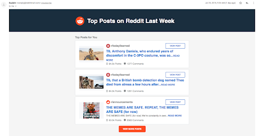

On wednesday the 1st of august 2018, Reddit released a statement announcing a security breach in which a hacker broke into their systems and had accessed all data created between 2005 and 2007, including a database backup which contained salted and hashed passwords, as well as private messages sent between users. Additionally, usernames and email addresses from June 3rd - June 17th 2018 were also accessed via logs containing the weekly email digests which show user's suggested popular posts from different subreddits.
The main measure that Reddit put in place after the attack was to switch to a token based two factor authentication process, as they decided the main cause of the attack was the problems with their previously used SMS based two factor authentication, more specifically they switched to a soft token based 2FA system using a authenticator app which can be installed on a smartphone, in which a security pin is generated every thirty seconds. SMS based 2FA is often regarded as the weakest form of authentication due to SIM-swapping attacks, where a hacker can transfer a phone number onto a SIM card that they control. Although this was the main point of concern after the attack, Reddit also reported the attack to law enforcement so that they too could investigate the issue, as well as messaging users who may have been affected to check if they were still using the same passwords as what would've appeared in the leak.
Reference: www.securemac.com
In early 2014, one of the biggest data breaches ever, affecting over 500 million users, started with a single spear-phishing email to a yahoo employee, all it took was one person to mistakenly click a link. Once in, the hacker found the user database, as well as the account management tool, giving them access to user's phone numbers, names, passwords, date of birth, email addresses, their security questions and the answers, as well as their recovery email addresses. Additionally, the hacker installed a backdoor on the yahoo server so he wouldn't lose access, as well as transferring a backup copy of the user database to his own computer.
To find specific users of interest, the hacker used the recovery email addresses, as well as the domain names as they may be linked to a specific company, for example the University of Brighton domain being “@brighton.ac.uk”. Using stolen nonces, they were able to generate cookies, allowing them access to the user's email without the need for a password. Of the 500 million users in the database, the hackers generated cookies for 6500 accounts, these included the deputy chairman of Russia, a trainer working in Russia's ministry of sport, an officer in Russia's ministry of internal affairs, Russian journalists, as well as U.S. government employees, a U.S. airline employee, and a Swiss bitcoin wallet company employee. However, this is not to say the rest of the user's and their data is safe, as that will have been sold and used by spammers in other attacks.
Consequently, although initially yahoo only believed that 26 accounts had been affected, in the aftermath of the attacks yahoo invalidated the unencrypted security questions and answers to stop them from being used, requiring them to reset, as well as invalidating the forged cookies used in the attacks. Additionally, yahoo advised their users to change their passwords. Ultimately, many experts agree that the blame lies with Yahoo, not enough preventative measures were put in place, and even in the investigation that followed after the attacks, it took Yahoo years to realise the full extent of the breach.
Reference: www.wired.com